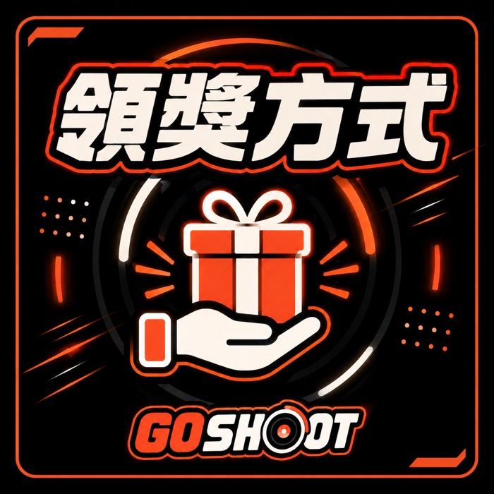
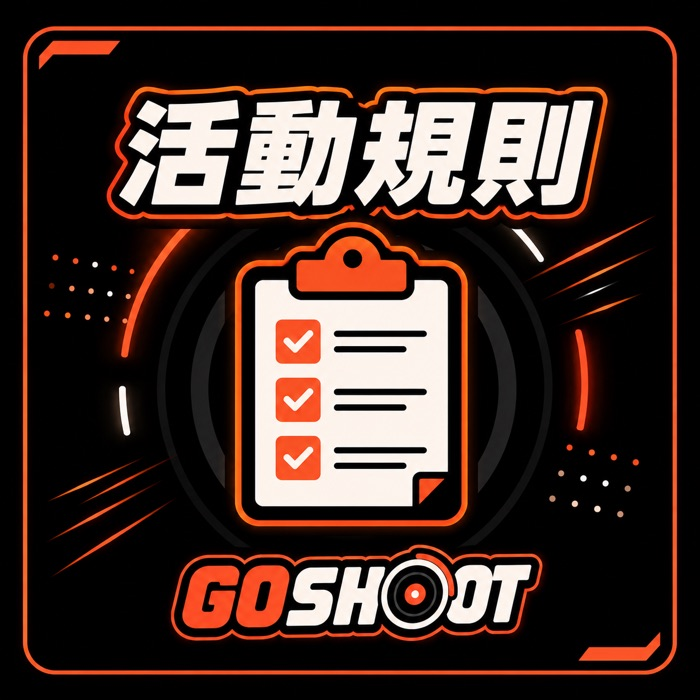

基本需要陀螺本體、發射器與競技盤，建議從含發射器的入門組合開始。完整說明見新手入門，不確定也可來店試打。
可以。店內設有對戰賽場，24 小時開放練習。每週六下午舉辦戰鬥陀螺比賽，免費參加、現場報名，名次可獲得實體陀螺或限定景品。辦法見戰鬥陀螺比賽。
有每週賽與每月賽，並設賽季排行榜。可在櫃台或透過 LINE 報名。完整賽制見賽事與會員頁。

當然。戰鬥陀螺競技深度高，有不少成年玩家。賽事分兒童組與公開組，分開比賽、分開頒獎。
加入 LINE 官方帳號綁定即成會員。消費累積 Go 幣，賽事得名、帶新朋友、留 Google 評價可額外加贈，Go 幣可用於抽賞與折抵獎品運費。詳見賽事與會員。
新北市中和區景平路593號之1，捷運中和站旁，連城路口公車站步行約一分鐘。詳見中和門市介紹頁。